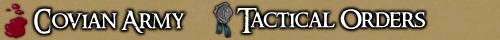
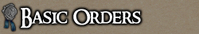
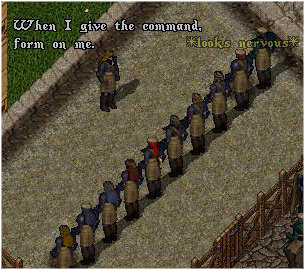
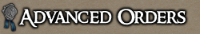
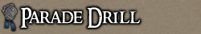

<TABLE BORDER CELLPADDING="0" background="bocimages/scrollbgdark.gif" width="100%">
	<TR>
	<!-- Header or whatever -->
	<BR>
		<TD valign="top" class="notes">
		Orders have long been the core discipline
	      of the Covian Army. Learn these orders well. For further information, also
	      read
	      <A HREF="http://cove.sugeworld.com/forum/index.php?topic=5459.0">The
	      Parade &amp; Battle Drill Guide</A>, by Senior Dragoon Joey Lanai.<BR>
	      <BR>
	      <BR>
	      <B>LINE UP!</B><BR>
	      All guardsmen will form a line ONE pace away from the leading
	      guardsman/officer.<BR>
	      <BR>
	      <B>ARM UP!</B><BR>
	      All guardsmen will brandish their weapon, mages will reveal their
	      spellbook.<BR>
	      <BR>
	      <B>READY ARMS!</B><BR>
	      All guardsmen will get into a combat stance, ready for battle (i.e. go into
	      war mode). This can also be accompanied by a suitable emote; *gets ready
	      for battle*, etc.<BR>
	      <BR>
	      <B>AT EASE!</B><BR>
	      All guardsmen will come out of combat stance, and return to normal (i.e.
	      go out of war mode). This, again, can be accompanied by a suitable emote;
	      *stands easy*, etc. This order can also be used to tell a guardsmen to stop
	      attacking, and generally take a few steps back if being insulted or provoked.
	      <DIV align=Center>
		<BR>
		<I><SMALL>Watchman Europaea explains Tactical Orders.</SMALL></I>
	      </DIV>
	      <P>
	      <BR>
	      <B>TRACKERS LINE!</B><BR>
	      All guardsmen will form behind the person giving the order, facing his back,
	      and await further instructions.<BR>
	      <BR>
	      <B>HIDE!</B><BR>
	      All guardsmen will run to a space and hide (if you have no actual hiding
	      skill, run off screen or emote *hide's behind tree*,etc). <BR>
	      <BR>
	      <B>FORM!</B><BR>
	      All guardsmen in the squad form a box around the leading guardsman, and the
	      central "Block".<BR>
	      <BR>
	      <B>CHARGE!</B><BR>
	      All skirmishers of the squad break formation and charge at the Enemy.<BR>
	      <BR>
	      <B>REFORM!</B><BR>
	      All skirmishers of the squad return to re-create the box formation.<BR>
	      <BR>
	      <B>FORM TACTICAL!</B><BR>
	      Multiple circles are disbanded, guardsmen gather around the Squad Leader,
	      a new circle is formed, and all guardsmen check eachother's health (OOC:
	      pull up health bars). <B>*Updated*</B><BR>
	      <BR>
	      <B>Salute to the fore! SALUTE!</B><BR>
	      Seemingly tricky for Covian guardsmen. Broken into two parts, the guardsmen
	      ready themselves at the command "Salute to the fore!", and salute ONLY when
	      given the confirming command "SALUTE!".<BR>
	      For example, "Salute to the fore!"... "SALUTE!" *Salutes*<BR>
	      <BR>
	      <BR>
	      <B>SOUND OFF!</B><BR>
	      Each guardsman will name his/her rank, starting from the RIGHT of the formed
	      line from the commanding guardsman's perspective.<BR>
	      <BR>
	      <B>NUMBER OFF!<BR>
	      </B>Each guardsman will count from One onwards in ascending order, starting
	      from the RIGHT of the formed line from the commanding guardsman's
	      perspective.<BR>
	      <BR>
	      <B>ARM PARADE ARMS!<BR>
	      </B>Each guardsman will arm the standard Covian parade arm, a halberd in
	      iron hue.<BR>
	      <BR>
	      <B>PARADE, TURN LEFT/RIGHT!<BR>
	      </B>Each guardsman will turn either left or right in the same state in which
	      the order is given (i.e. if you have been told to READY ARMS, remain in such
	      state).<BR>
	      <BR>
	      <B>PARADE, ABOUT FACE!<BR>
	      </B>Each guardsman will turn to face the opposite
	      direction.<BR>
	      <BR>
	      <B>PARADE, FACE FRONT!<BR>
	      </B>Each guardsman must turn to face the guardsman in
	      command.<BR>
	      <BR>
	      <B>PARADE, HOLD ARMS!<BR>
	      </B>Each guardsman must disarm their weapon.<BR>
	      <BR>
	      <I>Commander Shadwell,<BR>
	      Senior Dragoon Joey Lanai, <BR>
	      Covian Army</I><BR>
	      Updated: 10/05/09
		</TD>
	</TR>
</TABLE>
